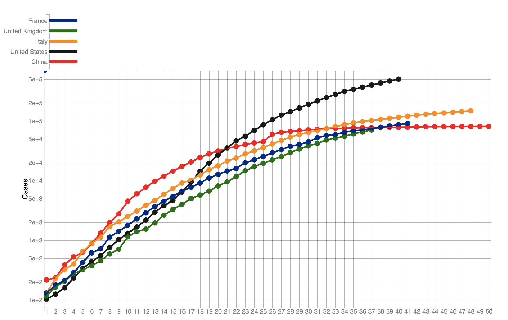
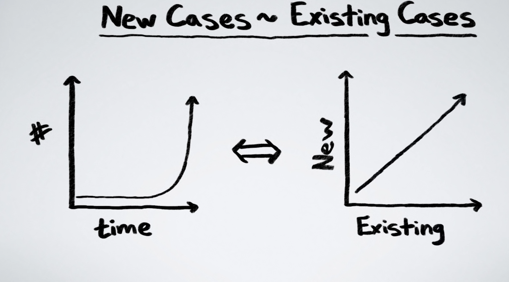

The coronavirus has continued to influence human beings. People also take plenty of measures like lockdown and travel restrictions to fight against this transparent enemy. But what effect of these measures and are them enough? What’s the step are we located in the whole process? Are we winning or losing? Are we below the turnaround point? This is the topic we will cover today.
There are many researches regarding the pandemic trending, which shows that it follows an exponentially increasing curve. The exponential function arises at a rate proportional to its current value. So the value will reach a incredible growth rate in a short period of time. The COVID-19 also follows the exponential function and here I show the current accumulated confirmed cases of each country since they reach the first 100 cases.
This graph use the log scale as the y axes. We can see that the number double compared to the previous one through the whole range. As the scale is different with the familiar one for human beings, There is a joke said that the hardest thing for human being is to understand the exponential function. This also shapes the reason why it’s hard to predict the exponential trend and find the turnaround point. I will give a detailed explanation below.
Followed by the previous topic, why it is hard to predict the turnaround point of the exponential trend? First we must know where is the turnaround point for an exponential curve. After the “exponential explosion”, the growth rate will reach a plateau. This is the turnaround point. But because, the overall trending is pretty the same among the growth phase. According to the right graph, we can see that the length of the exponential function is hard to predict when we in the middle. It seems impossible to judge how long we still need to go. But this turnaround point is important because the final result will be several times the quantity of the others. By predicting the turnaround point, we can better recognize the current situation and decide whether we should more focus on the economic side or tight the restrictions.
Graph Created By minutephysicsAfter reviewing some researches, I have found that by using some models and unpopular ways, we can some how predict the turnaround point. At least we can do better visualizations compared to the ordinary one. Here are some main points:
As we talked before, the logarithmic function is the reverse calculation for exponential function. By using the log scale, we can model countries of huge different case difference. We already showed a divided graph of each countries because they are hard to compare in ordinary linear scale. After we edit to the log scale, the situation is difference. Even these countries differ a lot in case numbers, we can still compare them together. 
As we talked before it is hard to find the turnaround point in exponential function based on the existed number. But in math area, there is an weapon called Derivative, which can focus on the sensitivity to change of a function. To make it simple, if we we can better identify the trend if we compare the growth rate. In the context of COVID-19, the new case number is a good indicator.
We typically evaluate the trend based on time. The plot would be the case numbers versus the time. But if we break this limitation, the plot could contain more valuable things. If we don’t care about the date, but only focus on the current situation, we can trow away the date. Then we use the plot with the new case number versus the existed cases. The miracle will happen, as the definition of exponential function, the plot will appear as a straight line. Graph Created By minutephysics
I have set up a Visualization dashboard here, which could link to a python backend made all by myself. Feel free to click it, I know the IP address may seem little bit horrible.